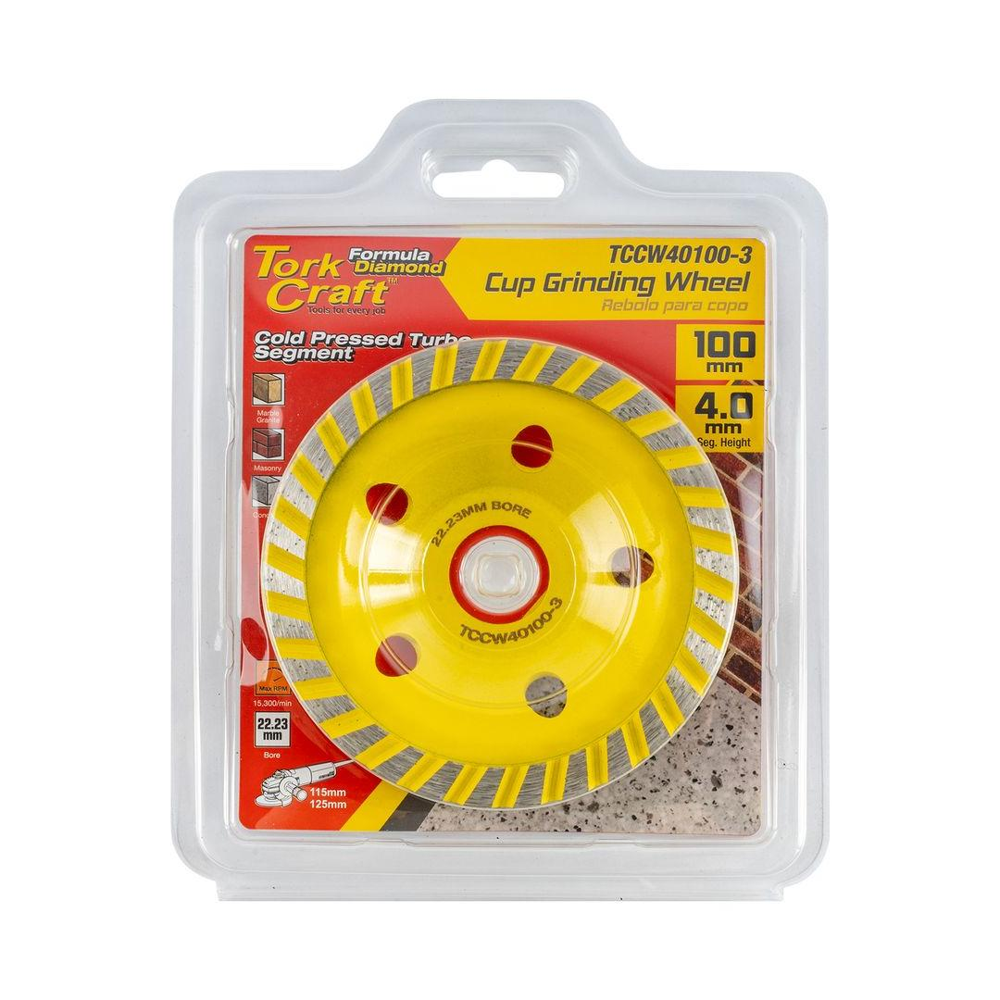
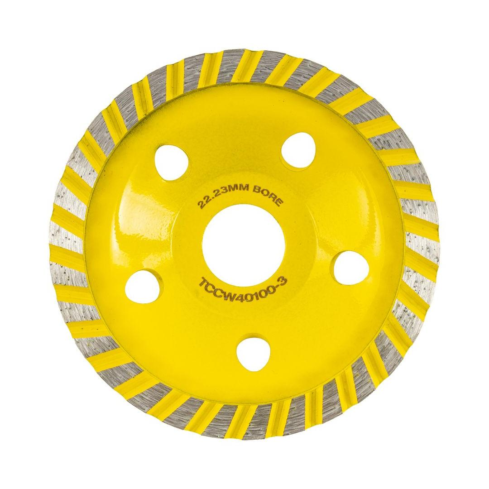

TCCW40100-3


Cup Diameter: 100mm
Arbor: 22.23mm
Max RPM: 15 300
Segment Configuration: Turbo
Classification: Yellow (Standard)
This economical turbo-style diamond cup wheel, measuring 100mm in diameter with a 22.23mm bore, is engineered for fast, smooth grinding on a variety of masonry surfaces. The continuous, segmented turbo rim design provides a more consistent grinding action and reduces chipping, resulting in a cleaner and finer finish compared to more aggressive segment styles. Cold-pressed for durability, this wheel is an excellent choice for tasks that require both rapid material removal and a high-quality surface finish, such as smoothing concrete floors, preparing surfaces for coatings, and detailing work on stone and brick. It&s a reliable and affordable option for professionals and DIY users looking for a versatile grinding wheel for their small angle grinder.
Application: